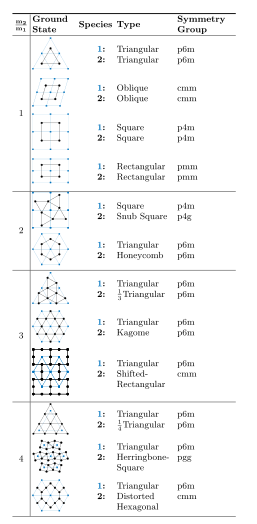
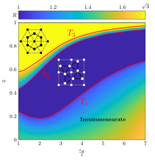

Platonic and Archimedean structures in superfluid mixtures
In a previous post we discussed the different vortex lattice configurations achievable when mixing two superfluids whose constituents have equal masses. In particular, denoting by \(g_1\),\(g_2\) the intraspecies interaction strengths in the two superfluids, and by \(g_{12}\) the interspecies interaction strength, we saw how for different values of the dimensionless interspecies interaction strength \(\alpha=g_{12}/\sqrt{g_1g_2}\), the system would achieve interlaced triangular, oblique, square, and rectangular lattices.
When considering higher mass ratios, which are fundamentally related to the ratio of vortex densities in each component as \(\frac{\rho_v^{(1)}}{\rho_v^{(2)}}=\frac{m_1}{m_2}\), a set of richer regular configurations and geometries appears. As shown in the table below, some notable configurations include the Snub-Square, Honeycomb, Kagome, and Herringbone lattices.
Regular vortex lattice configurations for different mass ratios. Here '\(\frac{1}{n}\)Triangular' denotes the triangular lattice with unit cell one \(n\)th of the unit cell area of the lattice denoted as 'Triangular'.
One particularly interesting feature of the structures listed above is that many of them can be seen as tilings of the plane by regular polygons. These tilings, originally studied by Kepler in his Harmonices Mundi (1619), go by the name of Platonic and Archimedean tilings and have been appearing in the arts since ancient times, as architectonic decorations, as the examples of honeycomb structures that can be found in the Registan in Samarkand (which dates back to 1417), or as in the case of the Kagome tiling appearing in the eponymous japanese bamboo basket, whose weaving is though to date back millennia. Platonic tilings consist of tessellations of the plane by means of one kind of regular polygon only. In Archimedean tilings instead, more than one polygon is used to tessellate the plane, but with the condition that they are edge-to-edge, which means that all vertices of the tessellation must be equivalent. In more recent times these structures were found in systems as diverse as metal alloys, DNA nanoparticles, liquid crystals, nanoconfined water, and more systems made by molecules and polymers of different complexity.
{kind=link}
{kind=link}
A Japanese man weaving a bamboo basket with the kagome ornament.
As it was done before for the case of equal constituents' masses (equal vortex densities in the two components), it is possible to fully characterise the phase diagram associated with these systems: in particular one obtains a phase diagram for each mass ratio under consideration. In the following figure for instance it is shown the phase diagram for the mass ratio \(m_2/m_1=2\).
Phase diagram for a superfluid mixture with mass ratio \(m_2/m_1=2\). Here \(\ell_B/\xi\) is related to the intraspecies interaction strenghts \(g_1\) and \(g_2\) in the two superfluids, and it is chosen such that the ratio between the size of the vortices and their average spatial separation is equal in both components.
When \(\alpha=0\) two triangular lattices are expected since the two superfluids are not interacting with one another.
Here a question arises: when are these lattices commensurate? Which means: do the two triangular lattices share
an infinite amount of points? The answer involves a particular set of integers called Löschian numbers. An integer number \(L\)
is called Löschian when it can be written as \(L=a^2+ab+b^2=1,3,4,7,9,12,13,...\) where \(a\) and \(b\) are both integers.
Then, two triangular lattices are commensurate only if the ratio of the density of vertices (or the mass ratio) is a ratio of
two Löschian numbers \(L_1/L_2\).
Because \(m_2/m_1=2\) is not a Löschian number, it follows that the two corresponding triangular lattices
will not be commensurate (the most important consequence of this is that the system cannot be represented in terms of a
periodic unit cell).

Illustration of the phase transition between \(T_2\) and \(T_3\) transforming the square/snub-square lattices into the triangular/honeycomb lattices.
When \(\alpha\approx 0\) the system is expected to retain its incommensurate state. However, there are other commensurate configurations which might exists for this specific case of \(m_2/m_1=2\). And this is in fact the case. When considering stronger interspecies interactions, the systems attains a combination of square and snub-square lattices, before transitioning to a configuration consisting of a triangular lattice and a honeycomb lattice. The transition occuring between the phase boundaries \(T_1\) and \(T_2\) is illustrated in the animation and picture below.